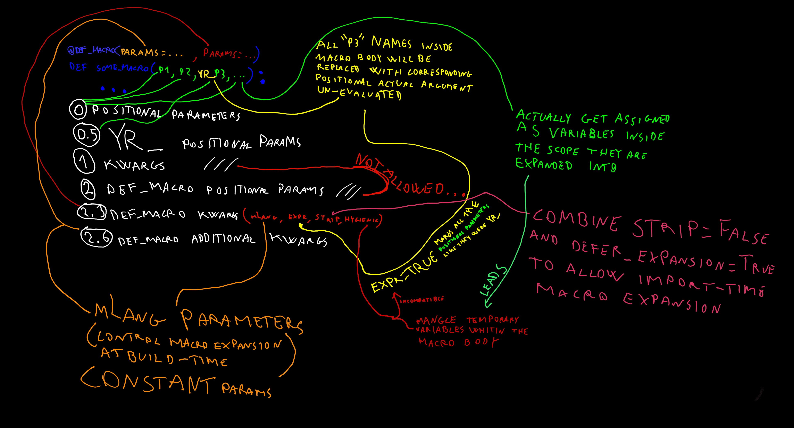

Macro Implementation¶
 TODO, look at the yeastr-test-proj repo for examples Contains all the macros The actual @def_macro() decorator may call this Here fn is the decorated function that is inspected to get the source
for the macro that gets added The usual @def_macro and @def_macro() may call this ast_node (ast.Name) – of the macro to retrieve A copy of the body of the macro as the last element of the returned tuple Tuple[str, Any, List[ast.AST]] Yeastr Ast Match: expr predicate: Example: Will match if ast_node would unparse like And, will bind a variable named ‘call’ And another one called literally ‘what’ (you can grab as name from) node (ast.AST) – to test call – a python name to be bound name (str) – to test call: object Unparse and eval the test condition of an Macro expansion body logics
:param loop: a loop label
:type loop: there’s no Loop type
:param hint: debug parameter for unknown actions
:type hint: Any Conditional macro expansion and constexpr Nested definitions Overwrites _macros (Macros) – the _macros singleton… node (ast.AST) – check this node is a known macro call One round of macro expansion Nested definitions Entry Point, expands a bunch of macros grouped by depth Nested definitionsParameters Specification¶
Has no members
IS A MACROyam_with_call_name(ast_node, call, 'mElse')with mElse():
IS A MACROmIf
IS A MACRO
IS A MACRO
perform(starting_node, next_node=None) ->
IS A MACROneeds_expansion and retrieved
IS A MACRO
moon_filter(moon) ->moon_walk(moonwalker) ->moon_filter(moon) ->moon_walk(moonwalker) ->moon_filter(moon) ->moon_walk(moonwalker) ->
IS A MACRO
filter_macro_moons(moon) ->